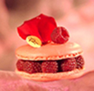

Macaron aux framboises

Ingrédients
- Blanc d'oeufs : 3
- Sucre glace : 210g
- Poudre d'amandes : 125g
- Sucre en poudre : 30g
- Framboises : 200g
- Colorant alimentaire : Fuschia
Etapes de réalisations
La gelée à la framboise :
Faire compoter les framboises à feu doux, avec le sucre semoule et le Vitpris pendant au moins 15 minutes. Passer au chinois pour enlever tout pépin. Bien mélanger et lisser. Laisser refroidir.
Le macaron :
- Mixer finement le sucre glace et la poudre d'amandes au couteau du robot. Tamiser au-dessus d'une feuille de papier sulfurisé de grande largeur.
- Mixer finement le sucre glace et la poudre d'amandes au couteau du robot. Tamiser au-dessus d'une feuille de papier sulfurisé de grande largeur.
- Monter les blancs en neige ferme en commençant avec une cuillère de sucre dès que le fouet laisse des marques, puis en mettant le reste et en fouettant à vitesse maximale pour obtenir un effet "bec d'oiseau", c'est à dire des pointes de blancs dès que vous retirez les fouets. Ajouter ensuite 40 gouttes de colorant fuschia ou rouge dans les blancs fermes et bien mélanger pour une couleur homogène.
- Saupoudrer peu à peu la poudre bien tamisée dans les blancs, et mélanger à la corne en plastique ou à la spatule en silicone. Le mélange doit être brillant, lisse, et former un ruban en retombant.
- Préparer une feuille de papier sulfurisé sur une plaque à pâtisserie.
- Dresser des petits dômes de 2 cm à la poche avec une douille lisse sur le papier, à intervalles réguliers et en quinconce.
- Laisser croûter une vingtaine de minutes au moins, voire même toute une nuit. Préchauffer le four à 150°C.
- Déposer la plaque de macarons sur 2 autres plaques identiques vides. Enfourner pour 12 minutes à 150°C.
Le montage :
- A la sortie du four, laisser refroidir les plaques quelques minutes, puis décoller les macarons.
- Coller les coques de macarons deux à deux avec une noix de gelée de framboise.